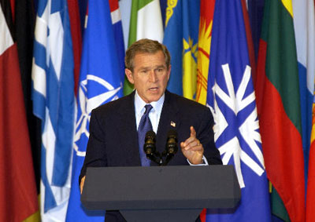

Forums galactiques > Assemblée Galactique : diplomatie officielle > Zone d'action de l ONU elargie
Pages : 1 2
| Président Chirac RF Respect diplomatique : 2  24/10 ETU 18:27 | Score : 0 Détails Commandant,
je vien vous retranscrir se qui se passe dans les Nations Unies terriéne, des débats dont vous n'avez pas accés, pour la raison que le vortex temporel qui nous apermis d'arriver dans le future ( pour nous) n'est empruntable que dans ce sens. Ainsi, La France a demandez officiellement l 'elargissement de la zone d'action de l ONU au frontiere atmosphérique des planetes colonisé par les puissance Terrienne, ainsi les planete conolisé par la France, les Etats UNis et la CHine, puis bientot la Russie, et surement l Angleterre, seront soumise au droit mondiaux terrien. Ceci afin d'eviter des conflits territoriaux comme ils ont faire rage lors de la colonisation et la création des Empire coloniaux. Ainsi j'attend les réponse de mes homologue Etats-Uniens et Chinois. | ||
| Président bush USA Respect diplomatique : 0  24/10 ETU 18:54 | Score : 0 Détails oui c est vrai que les débats ont été aujourd' hui très fructueux et que nous sommes sorti avec de bonnes perspectives de paix et délargissement.
je tiens dons a dire au non de lamérique que la periode ou la france et lamérique se sont opposé pour des divergences d'opignon est résolut. c est a dire que depuis que nous avons découvers la possibilité de se propulsser dans une dimantion aussi différente de la notre nous avons tandanse a se serrer les coudes afin de comprendre et de maîtriser tout ses technologies ultra devellopper inimaginable il y a a peine 10 ans cordialement président bush | ||
| Snakeshit Respect diplomatique : 16  24/10 ETU 20:02 | Score : 0 Détails Vous êtes chiants avec ça, arrêtez d'en parler sur cette assemblée si ce ne sont que des problèmes internes! J'ai rarement attaqué, mais je sens que vous allez périr, si vus conitnuez cet irrespect des lois fondamentales de la parole et de l'utilité de l'assemblé!
| ||
| Président bush USA Respect diplomatique : 0 24/10 ETU 20:07 | Score : 0 Détails vous allez donc attaquer un commandant parsqu il s'exprime sur lassemble ?
êtes vous ultremiste? | ||
| Morcar Baughlir Respect diplomatique : 0  24/10 ETU 20:10  | Score : 0 Détails Au contraire, ils ont parfaitement le droit de décrété qu'ils sont partis sur des bases d'alliances au sein de l'Assemblée.
Si Marcus et Imothep agissait de même, vous les féliciteriez... Je ne vois pas pourquoi nous devons faire une différence du fait du jeune age de ces commandants (j'entend par la âge en temps que commandant). En revanche, il est vrai qu'un leger effort sur l'orthographe fairait très plaisir à bon nombre d'autres commandants présents. Aussi, je remercie les divers présidents de faire des efforts en ce sens. | ||
| Sephiroth Respect diplomatique : 4  24/10 ETU 20:11 | Score : 0 Détails Pour ma part je trouve vos discours d'un effroyable ennuie, si vous "tripez" avec vos potes vous avez créé c'est personage c'est bien mais vous passez votre temps a racontez votre vie personelement cela m'agace se n'est surment pas l'avi de tout les commandant mais c'est le mien.
| ||
| Morcar Baughlir Respect diplomatique : 0 24/10 ETU 20:12 | Score : 0 Détails Président Bush, il semble que vous n'ayez pas compris la doctrine Ultremiste... Il seraient les premiers a défendre votre droit à la parole.
L'Ultremisme est la forme la plus radicale de liberté individuelle. Son abus provoque l'anarchie et le chaos, mais certainement pas la censure... | ||
| Alexandre 1er Respect diplomatique : 179  24/10 ETU 20:13 | Score : 0 Détails Yorait possibilite decrire corectement en francais MERSSI BOCOÛT !!!
| ||
| Snakeshit Respect diplomatique : 16 24/10 ETU 20:13 | Score : 0 Détails Morcar, je n'applaudirais pas Marcus et Impothep si ils faisaient de même, choses qu'ils ne ferront jamais d'ailleurs! Car si j'ai bien compris, Chirac demande l'accord à Bush et au Chinois! Cela pourrait être reglé par MP et non dans l'assemblé inter-galactique avec autant de fautes! Je crois que c'est les fautes qui vont me convaincre de les tuer!
| ||
| Seigneur vador Respect diplomatique : 442  24/10 ETU 20:14 | Score : 0 Détails Moi je dit que comme se sont des president ils dirigent une republique et donc sont les ennemis de tout empire!!!!!!
Les ennemis de l'mpire sont mes ennemis....(serment preté par les soldats imperiaux lors de leurs integration dans l'armée imperiale)... | ||
| Commandant Kerstan Respect diplomatique : 126  24/10 ETU 20:17 | Score : 0 Détails En tout cas, on ne peut que saluer l'effort fait lorsqu'ils prennent la parole.
HRP : Je veux dire par là qu'ils ont un RP interessant, ce qui est rare pour de nouveaux commandants. | ||
| Seigneur vador Respect diplomatique : 442 24/10 ETU 20:19 | Score : 0 Détails Jusqua maintenant leurs discours m'ont servi de somnifere pour la siest,sans vouloir offencer qui que ce soit....
| ||
| Morcar Baughlir Respect diplomatique : 0 24/10 ETU 20:22 | Score : 0 Détails Je serais dans ce cas obligé (a mon grand regret) de sortir de ma situation enfin acquise de paix pour les défendre. Je refuse que l'on attaque des commandants parcequ'il ont décider de s'exprimer à l'Assemblée. Vous les critiquer parcequ'ils n'utilisent pas les MP, pourquoi ne faites vous pas de même pour leur demander d'avoir des discourts plus a votre goût...
Quand à Marcus, Imothep & Co, c'est exactement ce qu'il font depuis 2 semaines déjà, à savoir se critiquer et se menacer, même s'il parlent également des conséquences de leurs actes sur le reste du monde... Ils peuvent se le permettre étant donné leur puissance, puisque effectivement, à leur moindre eternument, des dizaines d'autres commandants s'enrhument... Je ne vois pas en quoi ces présidents, dans leur tentative d'organiser une intrigue parallèle à l'Assemblée, méritent la mort. Quand à l'orthographe, je les incite également à faire des effort, mais cela je l'ai déjà dit... | ||
| Président Chirac RF Respect diplomatique : 2 24/10 ETU 20:45 | Score : 0 Détails Merci commandant Morcar d'essailler de raisonner ces commandants,
Je vais essailler de faire attention a mon orthographe, pour vous montrez ma bonne fois, quand aux commandants qui nous menacent, je pense réellement que vous etes des instables, Attaquez vous Imothep et Marcus lorsqu'ils réglent leurs comptes personnels devant toute l Assemblée, d'accord leurs comptes regardent d'autre commandant, mais certainement pas les 300 qui composent la galaxie, alors je vous prierais d'arreter vos menace, et de vous occupez d'autre chose si nos discour ne vous interressent pas, quand a vous Seigneur Vador, de quel droit vous proclamez vous empereur, et une républqiue n'est pas l'enemi d'un Empire, où donc allez vous cherchez ces calomnies? Merci, Cordialement, Chirac | ||
| Snakeshit Respect diplomatique : 16 24/10 ETU 20:52 | Score : 0 Détails Vous avez raisons sur certains points Morcar et votre sagesse est sans doute infinimment plus grande que la mienne (votre puissance aussi d'ailleurs)!
Mais le fait est qu'on se moque de ce quis e passe sur le monde d'origine, car apparament ça ne les concerne qu'eux! [HRP]Je veux dire par la qu'ils sont au bord du flood, si ils continuent dans cette voie![/HRP] | ||
| Spectror Respect diplomatique : 0  24/10 ETU 20:54 | Score : 0 Détails Ce n'est pas un conflit qui oppose Marcus à Imothep, c'est un conflit qui oppose deux camps, celui de la Résistance, et celui de l'Ultrêmisme, et il concèrne au moins la moitié de la Galaxie, Marcus n'est pas le seul à venir "papoter" avec Imothep, c'est une Guerre, il y a des Soldats, et il y a des personnes qui sont là pour soutenir ces Soldats, par Soldats je n'entend pas Imothep et Marcus, mais les commandants qui se battent dans chacuns des camps, que ce soit celui de la Résistance, ou celui de l'Ultrêmisme.
Certaines de vos affaires pourraient se résoudre à la Taverne, voire en Messagerie Com-X. | ||
| Morcar Baughlir Respect diplomatique : 0 24/10 ETU 21:06 | Score : 0 Détails Il est vrai que les problèmes de leur monde d'origine n'interressent pas l'assemblée, mais le fait qu'ils expriment sur l'assemblée le fait qu'ils ont décidés de s'assembler n'est pas à critiquer... D'autant plus, que d'une approche purement historique, nous avons en ces trois présidents les représentant de trois des peuples peuples qui ont donné les trois factions que nous connaissont aujourd'hui (Guildéens, Alliantistes et Fédérés). S'ils agissent intelligement, cela peut amener à la galaxie des grandes choses.
| ||
| Morcar Baughlir Respect diplomatique : 0 24/10 ETU 21:09 | Score : 0 Détails Je tiens a apporter une correction à Spectror... Seule une partie des "Résistants" est entré dans ce conflit, et Imothep est désormais seul. L'abbé Ramouflon s'est désengagé, et nombre d'ultremistes vont suivre sa voie... Du moins c'est à esperer...
De plus, Imothep n'est pas un Ultrèmiste, il a juste poursuivit les même objectifs qu'eux pendant une période. | ||
| Morcar Baughlir Respect diplomatique : 0 24/10 ETU 21:21 | Score : 0 Détails Ma pauvre mère doit s'approcher des 120 ans étant donné mon âge... Vous avez de drôles de goûts, commandant...
| ||
| Snakeshit Respect diplomatique : 16 24/10 ETU 21:22 | Score : 0 Détails Morcar, vous auriez pu éditer votre précédent message! Mais je suis d'accord sur le fait qu'Imothep ne soit point un ultremiste!
Et pour l'anti-président je vais appeller le greffier, et surtout ingorez ce flooder débile en puissance, en attendant que le greffier intervienne! |
Pages : 1 2
Forums galactiques > Assemblée Galactique : diplomatie officielle > Zone d'action de l ONU elargie